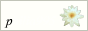
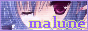
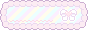
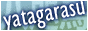
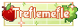
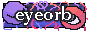
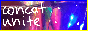
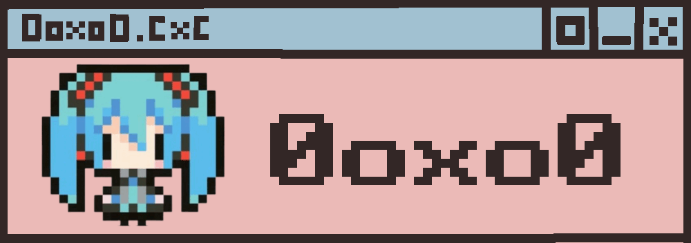
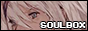

Bookmarks
HTML/CSS/JavaScript
- W3Schools & Mozilla - Recources that explain code
- Stack Overflow - When you have that niche coding questions that's been answered 9 years ago
Nekoweb
- jbc.lol - elements.css preview (site box and rss feed style)
- RSS tutorial by joosh
- Max's site stats
- https://nekoweb.org/follow/nogood-angel.nekoweb.org - follow URL
- https://nekoweb.org/api/site/info/nogood-angel.nekoweb.org - site stats URL
Neocities
- Dannarchy's Site stats
Graphics
- Bonnibel's graphic collection
- Collection of 4000+ 88x31 buttons
- fluffmoth's ID database and ID Maker
Credits
- Same layout code by PetraPixel
- Calender code by Nyscyra, I modified with Moosyu's help.
- Max's site stats, modified with Moosyu's help
- Moon widget by Dimden
- NavLinks also by Dimden
- SideLinks by dogspit
- Status using Status.cafe
- Feeling using iMood
- Chattable chat box
- Atabook guestbook
- My 88x31 button commission from rice
- Discord status rice and Moosyu
Neighbors
Cool person. The first site I naturally found on Nekoweb and became an inspiration.











If we've followed each other for more then a couple of days and you're not here, contact
Other cool sites
✦Inspiration
One of the creators of Nekoweb. The moon widget is interesting and I'd like to do something like that myself.
One of the creators of Nekoweb. The moon widget is interesting and I'd like to do something like that myself.






✦Inspiration

✦Inspiration
I want to do something like this. So detailed.
I want to do something like this. So detailed.




Special thanks
Helped much with JavaScript. His guides are useful too.


 I am
I am